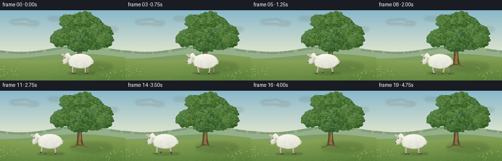
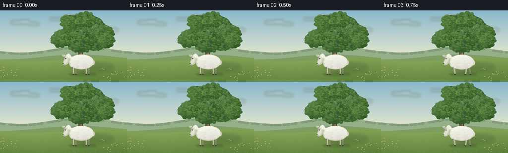

CODING AGENTS AS PIXEL WORLD MODELS
traex/GPT-6.1-Sol · instance_preservation_0056
点击播放 · 原生 RGB 像素
逐轮保存的候选
回放视频、检查图与代码变化。
每份候选均可单独播放。实际图片检查记录在下方工具轨迹中。
候选 01播放与检查图
点击播放 · 原生 RGB 像素


展开代码变化
--- 上一保存版本
+++ 本次保存版本
@@ -0,0 +1,221 @@
+"""Deterministic, supersampled RGB pastoral animation generated from geometry."""
+from pathlib import Path
+import math
+import numpy as np
+from PIL import Image, ImageDraw, ImageFilter
+import artifact_io
+
+ROOT = Path(__file__).resolve().parent
+W, H, S = 256, 144, 4
+rng = np.random.default_rng(56)
+
+def ellipse(draw, box, fill, outline=None, width=1):
+ draw.ellipse(tuple(round(v*S) for v in box), fill=fill, outline=outline, width=max(1,round(width*S)))
+
+def line(draw, pts, fill, width=1):
+ draw.line([(round(x*S),round(y*S)) for x,y in pts],fill=fill,width=max(1,round(width*S)),joint='curve')
+
+def poly(draw, pts, fill):
+ draw.polygon([(round(x*S),round(y*S)) for x,y in pts],fill=fill)
+
+def bezier(points, n=35):
+ p=np.asarray(points,float)
+ out=[]
+ for t in np.linspace(0,1,n):
+ q=p.copy()
+ while len(q)>1: q=q[:-1]*(1-t)+q[1:]*t
+ out.append(tuple(q[0]))
+ return out
+
+def smoothpoly(draw, segments, fill):
+ pts=[]
+ for seg in segments: pts.extend(bezier(seg))
+ poly(draw,pts,fill)
+
+# Soft, sunlit sky and a subtly mottled meadow; all texture is fixed in space.
+y,x=np.mgrid[0:H*S,0:W*S].astype(float); y/=S; x/=S
+sky_top=np.array([137,184,203]); sky_bottom=np.array([230,232,206])
+a=np.minimum(y/95,1)[...,None]
+arr=sky_top*(1-a)+sky_bottom*a
+noise=rng.normal(0,.65,(H*S,W*S,1))
+arr=np.clip(arr+noise,0,255).astype('uint8')
+background=Image.fromarray(arr,'RGB')
+cloud=Image.new('RGBA',background.size)
+cd=ImageDraw.Draw(cloud)
+for cx,cy,ww,hh in [(34,24,26,6),(49,23,22,7),(67,27,24,5),(109,17,20,4),(119,18,14,4),(228,39,23,5)]:
+ ellipse(cd,(cx-ww/2,cy-hh/2,cx+ww/2,cy+hh/2),(255,253,234,105))
+cloud=cloud.filter(ImageFilter.GaussianBlur(3*S))
+background=Image.alpha_composite(background.convert('RGBA'),cloud).convert('RGB')
+d=ImageDraw.Draw(background)
+# Two layers of rolling, atmospheric hills.
+pts=[(0,82)]+[(xx,79+4*math.sin(xx/34)+3*math.cos(xx/56)) for xx in range(257)]+[(256,144),(0,144)]
+poly(d,pts,(149,176,137))
+pts=[(0,99)]+[(xx,94+5*math.sin(xx/48+1.4)) for xx in range(257)]+[(256,144),(0,144)]
+poly(d,pts,(126,157,99))
+# Distant hedgerow and small trees, kept soft and low contrast.
+far=Image.new('RGBA',background.size); fd=ImageDraw.Draw(far)
+for i in range(100):
+ xx=float(rng.uniform(-5,262)); yy=82+4*math.sin(xx/34)+3*math.cos(xx/56)
+ rr=float(rng.uniform(1,3.2))
+ ellipse(fd,(xx-rr,yy-rr*.9,xx+rr,yy+rr*.5),(105,144,115,120))
+far=far.filter(ImageFilter.GaussianBlur(.55*S))
+background=Image.alpha_composite(background.convert('RGBA'),far).convert('RGB')
+# Near meadow gradient follows a gently sloping ridge.
+arr=np.asarray(background).copy().astype(float)
+ridge=99+4*np.sin(x/47+.2)
+mask=y>=ridge
+v=np.clip((y-ridge)/47,0,1)
+field=np.array([134,162,85])[None,None,:]*(1-v[...,None])+np.array([91,128,59])[None,None,:]*v[...,None]
+field += 2*np.sin(x[...,None]/55)+rng.normal(0,.9,field.shape[:2])[...,None]
+arr[mask]=field[mask]
+background=Image.fromarray(np.clip(arr,0,255).astype('uint8'))
+d=ImageDraw.Draw(background)
+# Sun flecks and fine blades of grass have decreasing density with distance.
+for i in range(2300):
+ xx=float(rng.uniform(0,256)); yy=float(rng.uniform(93,145))
+ if yy < 99+4*math.sin(xx/47+.2): continue
+ depth=(yy-92)/52
+ height=float(rng.uniform(.35,2.1))*depth
+ color=tuple(int(z) for z in (np.array([119,151,70])+rng.uniform(-18,22)))
+ line(d,[(xx,yy),(xx+rng.uniform(-.7,.7),yy-height)],color,.18+.15*depth)
+# Large oak's grounding shadow.
+shadow=Image.new('RGBA',background.size); sd=ImageDraw.Draw(shadow)
+ellipse(sd,(143,105,230,126),(45,74,32,52))
+ellipse(sd,(151,108,200,118),(41,64,29,58))
+shadow=shadow.filter(ImageFilter.GaussianBlur(3*S))
+background=Image.alpha_composite(background.convert('RGBA'),shadow).convert('RGB')
+d=ImageDraw.Draw(background)
+# An organically tapered trunk, branching high behind the crown.
+smoothpoly(d,[[(154,113),(159,100),(157,87),(158,69)],[(158,69),(150,58),(147,52),(145,47)],[(145,47),(156,53),(160,60),(163,66)],[(163,66),(172,52),(180,45),(183,36)],[(183,36),(183,50),(175,61),(168,73)],[(168,73),(165,92),(168,105),(172,114)],[(172,114),(164,111),(162,112),(154,113)]],(93,77,47))
+smoothpoly(d,[[(158,110),(162,98),(160,78),(161,65)],[(161,65),(164,67),(166,68),(166,73)],[(166,73),(162,93),(164,104),(167,112)],[(167,112),(164,109),(161,110),(158,110)]],(144,117,69))
+line(d,[(159,75),(148,66),(132,57)],(101,84,49),3.2)
+line(d,[(166,80),(181,67),(192,60)],(101,84,49),3.2)
+line(d,[(163,84),(159,99),(160,109)],(74,66,43),.65)
+line(d,[(165,77),(164,90),(165,100)],(187,150,86),.65)
+for k in range(17):
+ yy=float(rng.uniform(77,110)); xx=float(rng.uniform(159,165))
+ line(d,[(xx,yy),(xx-.2,yy+rng.uniform(1,4))],(104,86,53),.25)
+line(d,[(160,109),(151,115),(144,116)],(91,78,44),1.5)
+line(d,[(165,109),(174,115),(180,115)],(105,88,49),1.3)
+# Volumetric overlapping leaf masses; shaded underneath, illuminated upper-left.
+clusters=[(138,53,24,18),(157,34,28,22),(186,32,24,20),(204,48,25,20),(190,62,27,19),(162,63,28,22),(123,58,20,15),(142,24,19,15),(170,19,23,15),(214,61,15,13)]
+for cx,cy,rx,ry in clusters:
+ ellipse(d,(cx-rx,cy-ry,cx+rx,cy+ry),(49,91,48))
+ # Cluster contour has many rounded, irregular silhouettes instead of hard ellipses.
+ leaf=[]
+ for j in range(105):
+ ang=rng.uniform(0,2*math.pi); rad=math.sqrt(rng.uniform(0,1))
+ xx=cx+rx*rad*math.cos(ang); yy=cy+ry*rad*math.sin(ang)
+ rr=float(rng.uniform(1.7,4.8))
+ lum=9*(-(xx-cx)/rx-(yy-cy)/ry)+rng.uniform(-12,13)
+ col=np.array([69,111,54])+lum
+ leaf.append((yy,xx,rr,tuple(np.clip(col,0,255).astype(int))))
+ for yy,xx,rr,col in sorted(leaf):
+ ellipse(d,(xx-rr,yy-rr*.8,xx+rr,yy+rr*.8),col)
+ if rng.random()<.6:
+ hi=tuple(np.minimum(np.array(col)+np.array([16,16,5]),255))
+ ellipse(d,(xx-rr*.7,yy-rr*.7,xx+rr*.45,yy-rr*.05),hi)
+# Fine leaves and warm glints, concentrated on exposed upper-left surfaces.
+for i in range(600):
+ cx,cy,rx,ry=clusters[int(rng.integers(len(clusters)))]
+ ang=rng.uniform(0,2*math.pi); rad=math.sqrt(rng.uniform(0,.9))
+ xx=cx+rx*rad*math.cos(ang); yy=cy+ry*rad*math.sin(ang)
+ col=(int(rng.uniform(95,139)),int(rng.uniform(133,159)),int(rng.uniform(53,75)))
+ if yy>cy+ry*.6: continue
+ ellipse(d,(xx-.65,yy-.3,xx+.8,yy+.45),col)
+# Root-level grass partially covers the roots.
+for i in range(55):
+ xx=float(rng.uniform(143,182)); yy=float(rng.uniform(112,119))
+ line(d,[(xx,yy),(xx+rng.uniform(-1.4,1.4),yy-rng.uniform(.8,3))],(105,139,60),.35)
+# A few restrained meadow flowers, away from the central action.
+for i in range(29):
+ xx=float(rng.choice([rng.uniform(0,34),rng.uniform(205,256)])); yy=float(rng.uniform(113,143))
+ line(d,[(xx,yy+1.4),(xx,yy-1)],(75,117,49),.3)
+ ellipse(d,(xx-.6,yy-.6,xx+.6,yy+.6),(235,225,159))
+ ellipse(d,(xx-.18,yy-.18,xx+.18,yy+.18),(199,160,54))
+
+# One persistent wool pattern reused throughout the sheep's movement.
+wool=[]
+for i in range(195):
+ ang=rng.uniform(0,2*math.pi); rad=math.sqrt(rng.uniform(0,1))
+ px=22.1*rad*math.cos(ang); py=12.6*rad*math.sin(ang)
+ rr=float(rng.uniform(1.6,3.0))
+ wool.append((py,px,rr,float(rng.uniform(-4,4))))
+wool.sort()
+
+def draw_sheep(img,cx,cy,phase,moving):
+ layer=Image.new('RGBA',img.size); dr=ImageDraw.Draw(layer)
+ def E(box,col): ellipse(dr,(box[0]+cx,box[1]+cy,box[2]+cx,box[3]+cy),col)
+ def L(pts,col,w): line(dr,[(xx+cx,yy+cy) for xx,yy in pts],col,w)
+ def P(pts,col): poly(dr,[(xx+cx,yy+cy) for xx,yy in pts],col)
+ def B(segs,col): smoothpoly(dr,[[(xx+cx,yy+cy) for xx,yy in seg] for seg in segs],col)
+ # Thin near and far legs alternate in a natural walking gait.
+ for far,hip,offset in [(True,-11,math.pi),(True,15,0),(False,-16,0),(False,10,math.pi)]:
+ s=math.sin(phase+offset)*moving
+ lift=max(0,math.cos(phase+offset))*3.0*moving
+ knee=(hip+2.2*s,18-lift*.2)
+ foot=(hip+4.6*s,25-lift)
+ col=(135,130,111,255) if far else (189,181,154,255)
+ L([(hip,8),knee,foot],col,2.4 if far else 2.8)
+ L([(hip-.35,9),(knee[0]-.45,knee[1]-1)],(225,220,197,255) if not far else (163,159,136,255),.6)
+ P([(foot[0]-1.3,foot[1]-1.3),(foot[0]+1.1,foot[1]-1),(foot[0]+1.7,foot[1]+1),(foot[0]-1.65,foot[1]+1)],(67,64,53,255))
+ # Short downturned tail at the rear, woolly at its root.
+ wag=.7*math.sin(phase)*moving
+ B([[(21,-4),(28,-4),(28,2),(25,6+wag)],[(25,6+wag),(23,7+wag),(22,4),(22,0)],[(22,0),(21,-2),(20,-3),(21,-4)]],(217,214,193,255))
+ E((-25,-11,-12,11),(220,217,198,255))
+ # Oval body is lit as a single coherent volume.
+ E((-25,-15,25,15),(205,205,187,255))
+ E((-24,-15,24,12),(234,233,214,255))
+ E((-21,-14,21,7),(245,243,225,255))
+ for py,px,rr,jit in wool:
+ shade=np.clip((py+12)/27,0,1)
+ brightness=246-26*shade+2*(-px/24)+jit
+ col=(int(brightness),int(brightness-.5),int(brightness-12),255)
+ E((px-rr,py-rr,px+rr,py+rr),col)
+ if rr>2:
+ b=min(255,brightness+5)
+ E((px-rr*.65,py-rr*.7,px+rr*.5,py+rr*.05),(int(b),int(b-1),int(b-10),255))
+ # Small curl creases give wool texture without outlining the animal.
+ L([(px+rr*.5,py+.2),(px+rr*.65,py+.7)],(int(brightness-16),int(brightness-16),int(brightness-23),165),.22)
+ # Tapered ovine face, oriented left for the entire shot.
+ B([[(-25,-13),(-29,-15),(-33,-11),(-34,-7)],[(-34,-7),(-35,-3),(-39,2),(-37,5)],[(-37,5),(-33,8),(-28,5),(-25,1)],[(-25,1),(-22,-4),(-22,-9),(-25,-13)]],(201,203,184,255))
+ B([[(-28,-12),(-32,-10),(-33,-5),(-34,-2)],[(-34,-2),(-37,2),(-35,4),(-32,4)],[(-32,4),(-29,1),(-27,-3),(-26,-8)],[(-26,-8),(-26,-10),(-27,-12),(-28,-12)]],(225,226,208,255))
+ # Far ear then near ear and warm inner ear.
+ P([(-25,-11),(-21,-17),(-20,-15),(-22,-9)],(160,164,143,255))
+ B([[(-29,-11),(-34,-16),(-40,-15),(-39,-13)],[(-39,-13),(-36,-9),(-31,-9),(-29,-11)]],(211,214,193,255))
+ P([(-31,-11),(-38,-14),(-35,-11)],(173,165,150,255))
+ # Small wool cap and fringe, not horns.
+ for px,py,rr in [(-25,-12,3.7),(-28,-13,3),(-23,-10,3.0),(-26,-15,2.4)]:
+ E((px-rr,py-rr*.75,px+rr,py+rr*.75),(241,241,222,255))
+ E((-32.9,-7.8,-30.6,-5.8),(58,63,52,255))
+ E((-32.5,-7.45,-31.9,-6.85),(251,250,231,255))
+ E((-38,2,-35.5,4),(85,88,75,255))
+ L([(-36.9,5),(-34.1,5.35),(-32.5,4.65)],(114,114,97,255),.45)
+ return Image.alpha_composite(img.convert('RGBA'),layer).convert('RGB')
+
+frames=[]
+for frame in range(20):
+ # Brief establishing pause, then traverse left, finishing with all four feet down.
+ u=np.clip((frame-2)/14,0,1)
+ progress=u*u*(3-2*u)
+ cx=164-88*progress
+ moving=float(np.clip(min(u/.12,(1-u)/.12),0,1))
+ phase=2*math.pi*3.0*u
+ cy=104-.65*math.cos(2*phase)*moving
+ im=background.copy()
+ sh=Image.new('RGBA',im.size); dd=ImageDraw.Draw(sh)
+ ellipse(dd,(cx-26,126,cx+30,132),(42,64,28,75))
+ ellipse(dd,(cx-18,126.8,cx+22,130.5),(37,55,26,50))
+ sh=sh.filter(ImageFilter.GaussianBlur(1.5*S))
+ im=Image.alpha_composite(im.convert('RGBA'),sh).convert('RGB')
+ im=draw_sheep(im,cx,cy,phase,moving)
+ # Tiny foreground blades at hoof height anchor the sheep to the grass.
+ dd=ImageDraw.Draw(im)
+ for xx,yy in [(17,139),(24,140),(51,136),(94,139),(116,141),(193,139),(224,138)]:
+ line(dd,[(xx-1,yy+2),(xx,yy-1),(xx+.5,yy+2)],(105,139,63),.4)
+ im=im.resize((W,H),Image.Resampling.LANCZOS)
+ frames.append(np.asarray(im,dtype=np.uint8))
+
+frames=np.stack(frames)
+artifact_io.save(frames,ROOT)
+print(f'Saved {len(frames)} RGB frames, {W}x{H}, 4 fps, to {ROOT}')
可观测工具轨迹
实际执行的命令与返回图片。
命令 1exit 0
/bin/bash -lc "ls -la && cat prompt.txt && printf '\\n---RULES---\\n' && cat GENERATION_RULES.md && printf '\\n---SPEC---\\n' && cat task_spec.json"
命令 2exit 0
/bin/bash -lc "cat artifact_io.py && python - <<'PY'
import PIL, numpy
print('PIL',PIL.__version__)
PY"命令 3exit 0
/bin/bash -lc "cat > generate.py <<'PY'
\"\"\"Deterministic, supersampled RGB pastoral animation generated from geometry.\"\"\"
from pathlib import Path
import math
import numpy as np
from PIL import Image, ImageDraw, ImageFilter
import artifact_io
ROOT = Path(__file__).resolve().parent
W, H, S = 256, 144, 4
rng = np.random.default_rng(56)
def ellipse(draw, box, fill, outline=None, width=1):
draw.ellipse(tuple(round(v*S) for v in box), fill=fill, outline=outline, width=max(1,round(width*S)))
def line(draw, pts, fill, width=1):
draw.line([(round(x*S),round(y*S)) for x,y in pts],fill=fill,width=max(1,round(width*S)),joint='curve')
def poly(draw, pts, fill):
draw.polygon([(round(x*S),round(y*S)) for x,y in pts],fill=fill)
def bezier(points, n=35):
p=np.asarray(points,float)
out=[]
for t in np.linspace(0,1,n):
q=p.copy()
while len(q)>1: q=q[:-1]*(1-t)+q[1:]*t
out.append(tuple(q[0]))
return out
def smoothpoly(draw, segments, fill):
pts=[]
for seg in segments: pts.extend(bezier(seg))
poly(draw,pts,fill)
# Soft, sunlit sky and a subtly mottled meadow; all texture is fixed in space.
y,x=np.mgrid[0:H*S,0:W*S].astype(float); y/=S; x/=S
sky_top=np.array([137,184,203]); sky_bottom=np.array([230,232,206])
a=np.minimum(y/95,1)[...,None]
arr=sky_top*(1-a)+sky_bottom*a
noise=rng.normal(0,.65,(H*S,W*S,1))
arr=np.clip(arr+noise,0,255).astype('uint8')
background=Image.fromarray(arr,'RGB')
cloud=Image.new('RGBA',background.size)
cd=ImageDraw.Draw(cloud)
for cx,cy,ww,hh in [(34,24,26,6),(49,23,22,7),(67,27,24,5),(109,17,20,4),(119,18,14,4),(228,39,23,5)]:
ellipse(cd,(cx-ww/2,cy-hh/2,cx+ww/2,cy+hh/2),(255,253,234,105))
cloud=cloud.filter(ImageFilter.GaussianBlur(3*S))
background=Image.alpha_composite(background.convert('RGBA'),cloud).convert('RGB')
d=ImageDraw.Draw(background)
# Two layers of rolling, atmospheric hills.
pts=[(0,82)]+[(xx,79+4*math.sin(xx/34)+3*math.cos(xx/56)) for xx in range(257)]+[(256,144),(0,144)]
poly(d,pts,(149,176,137))
pts=[(0,99)]+[(xx,94+5*math.sin(xx/48+1.4)) for xx in range(257)]+[(256,144),(0,144)]
poly(d,pts,(126,157,99))
# Distant hedgerow and small trees, kept soft and low contrast.
far=Image.new('RGBA',background.size); fd=ImageDraw.Draw(far)
for i in range(100):
xx=float(rng.uniform(-5,262)); yy=82+4*math.sin(xx/34)+3*math.cos(xx/56)
rr=float(rng.uniform(1,3.2))
ellipse(fd,(xx-rr,yy-rr*.9,xx+rr,yy+rr*.5),(105,144,115,120))
far=far.filter(ImageFilter.GaussianBlur(.55*S))
background=Image.alpha_composite(background.convert('RGBA'),far).convert('RGB')
# Near meadow gradient follows a gently sloping ridge.
arr=np.asarray(background).copy().astype(float)
ridge=99+4*np.sin(x/47+.2)
mask=y>=ridge
v=np.clip((y-ridge)/47,0,1)
field=np.array([134,162,85])[None,None,:]*(1-v[...,None])+np.array([91,128,59])[None,None,:]*v[...,None]
field += 2*np.sin(x[...,None]/55)+rng.normal(0,.9,field.shape[:2])[...,None]
arr[mask]=field[mask]
background=Image.fromarray(np.clip(arr,0,255).astype('uint8'))
d=ImageDraw.Draw(background)
# Sun flecks and fine blades of grass have decreasing density with distance.
for i in range(2300):
xx=float(rng.uniform(0,256)); yy=float(rng.uniform(93,145))
if yy < 99+4*math.sin(xx/47+.2): continue
depth=(yy-92)/52
height=float(rng.uniform(.35,2.1))*depth
color=tuple(int(z) for z in (np.array([119,151,70])+rng.uniform(-18,22)))
line(d,[(xx,yy),(xx+rng.uniform(-.7,.7),yy-height)],color,.18+.15*depth)
# Large oak's grounding shadow.
shadow=Image.new('RGBA',background.size); sd=ImageDraw.Draw(shadow)
ellipse(sd,(143,105,230,126),(45,74,32,52))
ellipse(sd,(151,108,200,118),(41,64,29,58))
shadow=shadow.filter(ImageFilter.GaussianBlur(3*S))
background=Image.alpha_composite(background.convert('RGBA'),shadow).convert('RGB')
d=ImageDraw.Draw(background)
# An organically tapered trunk, branching high behind the crown.
smoothpoly(d,[[(154,113),(159,100),(157,87),(158,69)],[(158,69),(150,58),(147,52),(145,47)],[(145,47),(156,53),(160,60),(163,66)],[(163,66),(172,52),(180,45),(183,36)],[(183,36),(183,50),(175,61),(168,73)],[(168,73),(165,92),(168,105),(172,114)],[(172,114),(164,111),(162,112),(154,113)]],(93,77,47))
smoothpoly(d,[[(158,110),(162,98),(160,78),(161,65)],[(161,65),(164,67),(166,68),(166,73)],[(166,73),(162,93),(164,104),(167,112)],[(167,112),(164,109),(161,110),(158,110)]],(144,117,69))
line(d,[(159,75),(148,66),(132,57)],(101,84,49),3.2)
line(d,[(166,80),(181,67),(192,60)],(101,84,49),3.2)
line(d,[(163,84),(159,99),(160,109)],(74,66,43),.65)
line(d,[(165,77),(164,90),(165,100)],(187,150,86),.65)
for k in range(17):
yy=float(rng.uniform(77,110)); xx=float(rng.uniform(159,165))
line(d,[(xx,yy),(xx-.2,yy+rng.uniform(1,4))],(104,86,53),.25)
line(d,[(160,109),(151,115),(144,116)],(91,78,44),1.5)
line(d,[(165,109),(174,115),(180,115)],(105,88,49),1.3)
# Volumetric overlapping leaf masses; shaded underneath, illuminated upper-left.
clusters=[(138,53,24,18),(157,34,28,22),(186,32,24,20),(204,48,25,20),(190,62,27,19),(162,63,28,22),(123,58,20,15),(142,24,19,15),(170,19,23,15),(214,61,15,13)]
for cx,cy,rx,ry in clusters:
ellipse(d,(cx-rx,cy-ry,cx+rx,cy+ry),(49,91,48))
# Cluster contour has many rounded, irregular silhouettes instead of hard ellipses.
leaf=[]
for j in range(105):
ang=rng.uniform(0,2*math.pi); rad=math.sqrt(rng.uniform(0,1))
xx=cx+rx*rad*math.cos(ang); yy=cy+ry*rad*math.sin(ang)
rr=float(rng.uniform(1.7,4.8))
lum=9*(-(xx-cx)/rx-(yy-cy)/ry)+rng.uniform(-12,13)
col=np.array([69,111,54])+lum
leaf.append((yy,xx,rr,tuple(np.clip(col,0,255).astype(int))))
for yy,xx,rr,col in sorted(leaf):
ellipse(d,(xx-rr,yy-rr*.8,xx+rr,yy+rr*.8),col)
if rng.random()<.6:
hi=tuple(np.minimum(np.array(col)+np.array([16,16,5]),255))
ellipse(d,(xx-rr*.7,yy-rr*.7,xx+rr*.45,yy-rr*.05),hi)
# Fine leaves and warm glints, concentrated on exposed upper-left surfaces.
for i in range(600):
cx,cy,rx,ry=clusters[int(rng.integers(len(clusters)))]
ang=rng.uniform(0,2*math.pi); rad=math.sqrt(rng.uniform(0,.9))
xx=cx+rx*rad*math.cos(ang); yy=cy+ry*rad*math.sin(ang)
col=(int(rng.uniform(95,139)),int(rng.uniform(133,159)),int(rng.uniform(53,75)))
if yy>cy+ry*.6: continue
ellipse(d,(xx-.65,yy-.3,xx+.8,yy+.45),col)
# Root-level grass partially covers the roots.
for i in range(55):
xx=float(rng.uniform(143,182)); yy=float(rng.uniform(112,119))
line(d,[(xx,yy),(xx+rng.uniform(-1.4,1.4),yy-rng.uniform(.8,3))],(105,139,60),.35)
# A few restrained meadow flowers, away from the central action.
for i in range(29):
xx=float(rng.choice([rng.uniform(0,34),rng.uniform(205,256)])); yy=float(rng.uniform(113,143))
line(d,[(xx,yy+1.4),(xx,yy-1)],(75,117,49),.3)
ellipse(d,(xx-.6,yy-.6,xx+.6,yy+.6),(235,225,159))
ellipse(d,(xx-.18,yy-.18,xx+.18,yy+.18),(199,160,54))
# One persistent wool pattern reused throughout the sheep's movement.
wool=[]
for i in range(195):
ang=rng.uniform(0,2*math.pi); rad=math.sqrt(rng.uniform(0,1))
px=22.1*rad*math.cos(ang); py=12.6*rad*math.sin(ang)
rr=float(rng.uniform(1.6,3.0))
wool.append((py,px,rr,float(rng.uniform(-4,4))))
wool.sort()
def draw_sheep(img,cx,cy,phase,moving):
layer=Image.new('RGBA',img.size); dr=ImageDraw.Draw(layer)
def E(box,col): ellipse(dr,(box[0]+cx,box[1]+cy,box[2]+cx,box[3]+cy),col)
def L(pts,col,w): line(dr,[(xx+cx,yy+cy) for xx,yy in pts],col,w)
def P(pts,col): poly(dr,[(xx+cx,yy+cy) for xx,yy in pts],col)
def B(segs,col): smoothpoly(dr,[[(xx+cx,yy+cy) for xx,yy in seg] for seg in segs],col)
# Thin near and far legs alternate in a natural walking gait.
for far,hip,offset in [(True,-11,math.pi),(True,15,0),(False,-16,0),(False,10,math.pi)]:
s=math.sin(phase+offset)*moving
lift=max(0,math.cos(phase+offset))*3.0*moving
knee=(hip+2.2*s,18-lift*.2)
foot=(hip+4.6*s,25-lift)
col=(135,130,111,255) if far else (189,181,154,255)
L([(hip,8),knee,foot],col,2.4 if far else 2.8)
L([(hip-.35,9),(knee[0]-.45,knee[1]-1)],(225,220,197,255) if not far else (163,159,136,255),.6)
P([(foot[0]-1.3,foot[1]-1.3),(foot[0]+1.1,foot[1]-1),(foot[0]+1.7,foot[1]+1),(foot[0]-1.65,foot[1]+1)],(67,64,53,255))
# Short downturned tail at the rear, woolly at its root.
wag=.7*math.sin(phase)*moving
B([[(21,-4),(28,-4),(28,2),(25,6+wag)],[(25,6+wag),(23,7+wag),(22,4),(22,0)],[(22,0),(21,-2),(20,-3),(21,-4)]],(217,214,193,255))
E((-25,-11,-12,11),(220,217,198,255))
# Oval body is lit as a single coherent volume.
E((-25,-15,25,15),(205,205,187,255))
E((-24,-15,24,12),(234,233,214,255))
E((-21,-14,21,7),(245,243,225,255))
for py,px,rr,jit in wool:
shade=np.clip((py+12)/27,0,1)
brightness=246-26*shade+2*(-px/24)+jit
col=(int(brightness),int(brightness-.5),int(brightness-12),255)
E((px-rr,py-rr,px+rr,py+rr),col)
if rr>2:
b=min(255,brightness+5)
E((px-rr*.65,py-rr*.7,px+rr*.5,py+rr*.05),(int(b),int(b-1),int(b-10),255))
# Small curl creases give wool texture without outlining the animal.
L([(px+rr*.5,py+.2),(px+rr*.65,py+.7)],(int(brightness-16),int(brightness-16),int(brightness-23),165),.22)
# Tapered ovine face, oriented left for the entire shot.
B([[(-25,-13),(-29,-15),(-33,-11),(-34,-7)],[(-34,-7),(-35,-3),(-39,2),(-37,5)],[(-37,5),(-33,8),(-28,5),(-25,1)],[(-25,1),(-22,-4),(-22,-9),(-25,-13)]],(201,203,184,255))
B([[(-28,-12),(-32,-10),(-33,-5),(-34,-2)],[(-34,-2),(-37,2),(-35,4),(-32,4)],[(-32,4),(-29,1),(-27,-3),(-26,-8)],[(-26,-8),(-26,-10),(-27,-12),(-28,-12)]],(225,226,208,255))
# Far ear then near ear and warm inner ear.
P([(-25,-11),(-21,-17),(-20,-15),(-22,-9)],(160,164,143,255))
B([[(-29,-11),(-34,-16),(-40,-15),(-39,-13)],[(-39,-13),(-36,-9),(-31,-9),(-29,-11)]],(211,214,193,255))
P([(-31,-11),(-38,-14),(-35,-11)],(173,165,150,255))
# Small wool cap and fringe, not horns.
for px,py,rr in [(-25,-12,3.7),(-28,-13,3),(-23,-10,3.0),(-26,-15,2.4)]:
E((px-rr,py-rr*.75,px+rr,py+rr*.75),(241,241,222,255))
E((-32.9,-7.8,-30.6,-5.8),(58,63,52,255))
E((-32.5,-7.45,-31.9,-6.85),(251,250,231,255))
E((-38,2,-35.5,4),(85,88,75,255))
L([(-36.9,5),(-34.1,5.35),(-32.5,4.65)],(114,114,97,255),.45)
return Image.alpha_composite(img.convert('RGBA'),layer).convert('RGB')
frames=[]
for frame in range(20):
# Brief establishing pause, then traverse left, finishing with all four feet down.
u=np.clip((frame-2)/14,0,1)
progress=u*u*(3-2*u)
cx=164-88*progress
moving=float(np.clip(min(u/.12,(1-u)/.12),0,1))
phase=2*math.pi*3.0*u
cy=104-.65*math.cos(2*phase)*moving
im=background.copy()
sh=Image.new('RGBA',im.size); dd=ImageDraw.Draw(sh)
ellipse(dd,(cx-26,126,cx+30,132),(42,64,28,75))
ellipse(dd,(cx-18,126.8,cx+22,130.5),(37,55,26,50))
sh=sh.filter(ImageFilter.GaussianBlur(1.5*S))
im=Image.alpha_composite(im.convert('RGBA'),sh).convert('RGB')
im=draw_sheep(im,cx,cy,phase,moving)
# Tiny foreground blades at hoof height anchor the sheep to the grass.
dd=ImageDraw.Draw(im)
for xx,yy in [(17,139),(24,140),(51,136),(94,139),(116,141),(193,139),(224,138)]:
line(dd,[(xx-1,yy+2),(xx,yy-1),(xx+.5,yy+2)],(105,139,63),.4)
im=im.resize((W,H),Image.Resampling.LANCZOS)
frames.append(np.asarray(im,dtype=np.uint8))
frames=np.stack(frames)
artifact_io.save(frames,ROOT)
print(f'Saved {len(frames)} RGB frames, {W}x{H}, 4 fps, to {ROOT}')
PY
python generate.py
ls -lh pixels.npz index.html inspection.png transition_check.png frames/00.png frames/19.png"命令 4exit 0
/bin/bash -lc "python - <<'PY'
from pathlib import Path
import numpy as np
from PIL import Image
p=np.load('pixels.npz')['pixels']
files=sorted(Path('frames').glob('*.png'))
assert p.shape==(144,256,20)
assert len(files)==20
for f in files:
im=Image.open(f)
assert im.mode=='RGB' and im.size==(256,144)
print('Validated: 20 RGB frames at 256Ã144; packed video tensor is correct.')
PY
command -v ffmpeg || true"保存候选 1 份；完成命令 4 次；可验证图片返回 0 张。原始 API 响应与完整日志保留在本地。